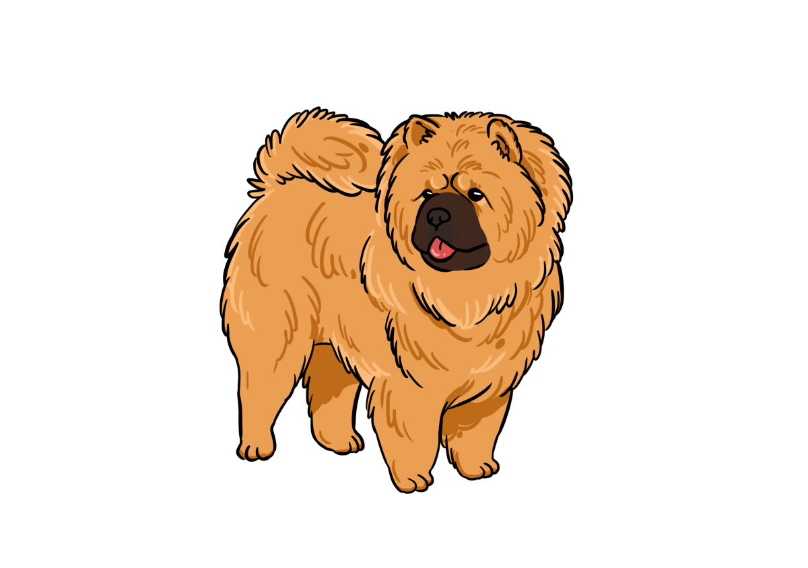
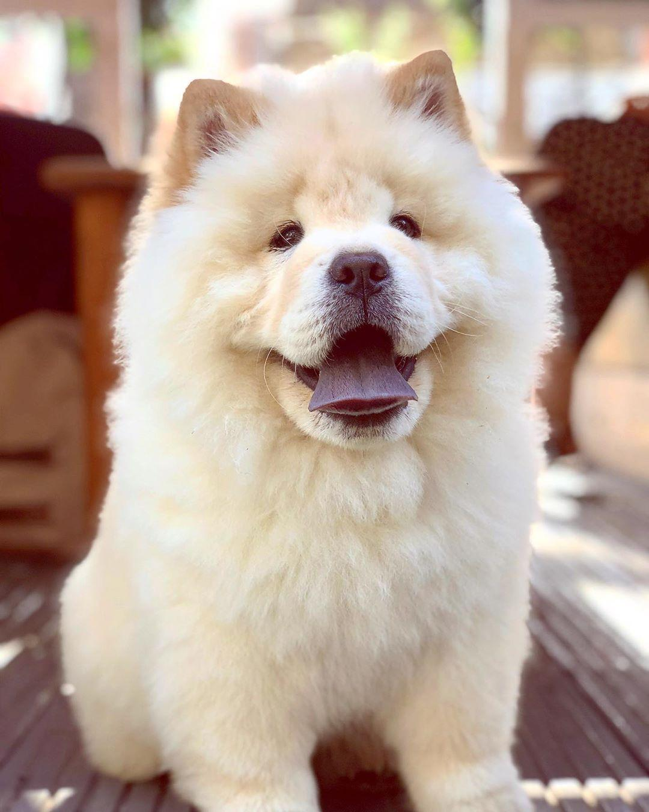
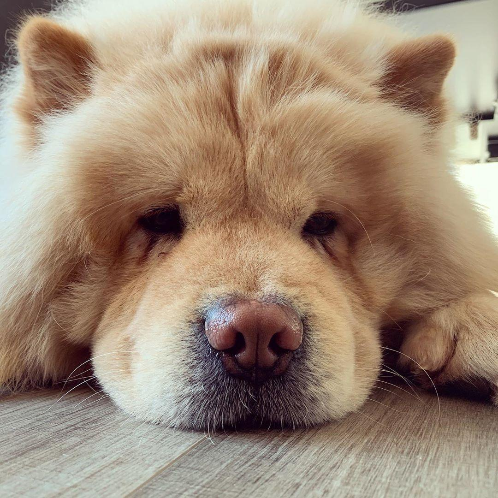
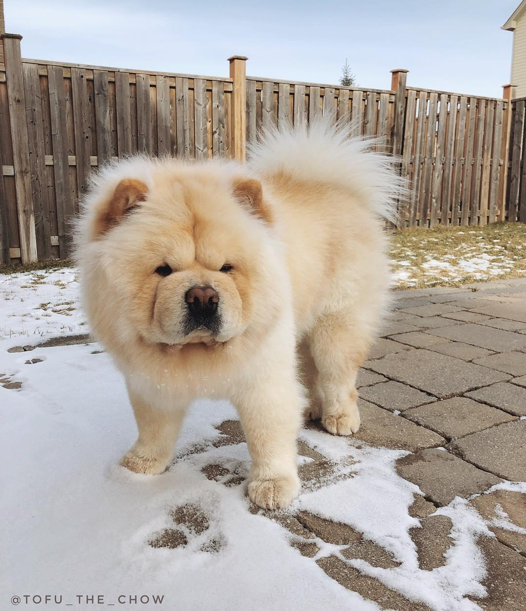

鬆獅犬

外表
鬆獅犬是一種結實的犬種，有著寬的頭顱和小圓耳朵，有濃密的被毛，在頸部的毛特別的厚形成了其特色的鬃毛。 背毛有數種顏色包括了紅棕色（描述為紅色）、黑、藍、肉桂色、奶油色和白色，不是所有的顏色變化皆被所有國家認可，雜色的犬隻被認為是不合育種標準。 鬆獅犬具有不同於一般犬隻的暗藍色舌頭以及非常直的後腿造就牠踩高蹺式的步法。
性格
雖然現在通常是當作寵物犬，但鬆獅犬在個性上有著固執和過於獨立的評價，所以有時難以訓練。它具同獅子的高貴及外貌、熊貓的詼諧、泰迪熊的吸引力、貓的優雅和獨立以及狗的忠心和熱愛。
歷史
最早發源各說不一，例如西伯利亞，蒙古及中國華北地區。根據記載，鬆獅犬在18世紀才被帶到歐洲，據說英文名稱「Chow Chow」是取自從中國運往英國的貨櫃名稱，也有一說是因為中國古名「獢」。
飼養注意事項
眼屎多及口水流不停，需保持清潔
不會非常好動，可以適應一般住家環境；但仍需每天固定散步，防止躁動或感到無聊
非常怕熱，要特別留意環境的濕度和通風，潮濕會引發皮膚病
早期繁殖被嚴重校正的鬆獅犬，可能因髖關節發育異常而不良於行
眼窩凹陷加上毛髮容易進入眼睛，易有睫毛倒插的現象
耳道較窄，當耳朵內的分泌物較多卻未清理時，很容易造成發炎


